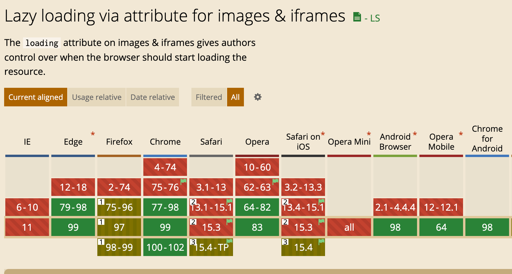

怎么实现图片懒加载？
参考答案
懒加载是一种网页性能优化的方式，它能极大的提升用户体验。就比如说图片，图片一直是影响网页性能的主要元凶，现在一张图片超过几兆已经是很经常的事了。如果每次进入页面就请求所有的图片资源，那么可能等图片加载出来用户也早就走了。所以，我们需要懒加载，进入页面的时候，只请求可视区域的图片资源。
总结出来就两个点：
- 全部加载的话会影响用户体验
- 浪费用户的流量，有些用户并不想全部看完，全部加载会耗费大量流量。
实现方式
html 实现
最简单的实现方式是给 img 标签加上 loading="lazy"，比如
<img src="./example.jpg" loading="lazy">该属性的兼容性也还行，大家生产环境可以使用。

js实现原理
我们通过js监听页面的滚动也能实现。
使用js实现的原理主要是判断当前图片是否到了可视区域：
- 拿到所有的图片 dom 。
- 遍历每个图片判断当前图片是否到了可视区范围内。
- 如果到了就设置图片的 src 属性。
- 绑定 window 的 scroll 事件，对其进行事件监听。
在页面初始化的时候，<img>图片的src实际上是放在data-src属性上的，当元素处于可视范围内的时候，就把data-src赋值给src属性，完成图片加载。
// 在一开始加载的时候
<img data-src="http://xx.com/xx.png" src="" />
// 在进入可视范围内时
<img data-src="http://xx.com/xx.png" src="http://xx.com/xx.png" /><div>使用背景图来实现，原理也是一样的，把图片链接存放在 data-src 中，在可视范围时，就把data-src赋值给 background-image 属性，完成图片加载。
// 在一开始加载的时候
<div
data-src="http://xx.com/xx.png"
style="background-image: none;background-size: cover;"
></div>
// 在进入可视范围内时
<div
data-src="http://xx.com/xx.png"
style="background-image: url(http://xx.com/xx.png);background-size: cover;"
></div>下面展示一个demo：
<html lang="en">
<head>
<meta charset="UTF-8" />
<title>Lazyload</title>
<style>
img {
display: block;
margin-bottom: 50px;
height: 200px;
width: 400px;
}
</style>
</head>
<body>
<img src="./img/default.png" data-src="./img/1.jpg" />
<img src="./img/default.png" data-src="./img/2.jpg" />
<img src="./img/default.png" data-src="./img/3.jpg" />
<img src="./img/default.png" data-src="./img/4.jpg" />
<img src="./img/default.png" data-src="./img/5.jpg" />
<img src="./img/default.png" data-src="./img/6.jpg" />
<img src="./img/default.png" data-src="./img/7.jpg" />
<img src="./img/default.png" data-src="./img/8.jpg" />
<img src="./img/default.png" data-src="./img/9.jpg" />
<img src="./img/default.png" data-src="./img/10.jpg" />
</body>
</html>先获取所有图片的 dom，通过 window.innerHeight || document.documentElement.clientHeight|| document.body.clientHeight 获取可视区高度，再使用 element.getBoundingClientRect() API 直接得到元素相对浏览的 top 值， 遍历每个图片判断当前图片是否到了可视区范围内。代码如下：
function lazyload() {
let viewHeight = window.innerHeight || document.documentElement.clientHeight|| document.body.clientHeight //获取可视区高度，兼容不同浏览器
let imgs = document.querySelectorAll('img[data-src]')
imgs.forEach((item, index) => {
if (item.dataset.src === '') return
// 用于获得页面中某个元素的左，上，右和下分别相对浏览器视窗的位置
let rect = item.getBoundingClientRect()
if (rect.bottom >= 0 && rect.top < viewHeight) {
item.src = item.dataset.src
item.removeAttribute('data-src')
}
})
}最后给 window 绑定 onscroll 事件
window.addEventListener('scroll', lazyload)主要就完成了一个图片懒加载的操作了。但是这样存在较大的性能问题，因为 scroll 事件会在很短的时间内触发很多次，严重影响页面性能，为了提高网页性能，我们需要一个节流函数来控制函数的多次触发，在一段时间内（如 200ms）只执行一次回调。
下面实现一个节流函数
function throttle(fn, delay) {
let timer
let prevTime
return function (...args) {
const currTime = Date.now()
const context = this
if (!prevTime) prevTime = currTime
clearTimeout(timer)
if (currTime - prevTime > delay) {
prevTime = currTime
fn.apply(context, args)
clearTimeout(timer)
return
}
timer = setTimeout(function () {
prevTime = Date.now()
timer = null
fn.apply(context, args)
}, delay)
}
}然后修改一下 srcoll 事件
window.addEventListener('scroll', throttle(lazyload, 200))拓展： IntersectionObserver
通过上面例子的实现，我们要实现懒加载都需要去监听 scroll 事件，尽管我们可以通过函数节流的方式来阻止高频率的执行函数，但是我们还是需要去计算 scrollTop，offsetHeight 等属性，有没有简单的不需要计算这些属性的方式呢，答案就是 IntersectionObserver。
IntersectionObserver 是一个比较新的 API，可以自动"观察"元素是否可见，Chrome 51+ 已经支持。由于可见（visible）的本质是，目标元素与视口产生一个交叉区，所以这个 API 叫做"交叉观察器"。我们来看一下它的用法：
var io = new IntersectionObserver(callback, option)
// 开始观察
io.observe(document.getElementById('example'))
// 停止观察
io.unobserve(element)
// 关闭观察器
io.disconnect()
IntersectionObserver 是浏览器原生提供的构造函数，接受两个参数：callback 是可见性变化时的回调函数，option 是配置对象（该参数可选）。
目标元素的可见性变化时，就会调用观察器的回调函数 callback。callback 一般会触发两次。一次是目标元素刚刚进入视口（开始可见），另一次是完全离开视口（开始不可见）。
下面我们用 IntersectionObserver 实现图片懒加载
const imgs = document.querySelectorAll('img[data-src]')
const config = {
rootMargin: '0px',
threshold: 0,
}
let observer = new IntersectionObserver((entries, self) => {
entries.forEach((entry) => {
if (entry.isIntersecting) {
let img = entry.target
let src = img.dataset.src
if (src) {
img.src = src
img.removeAttribute('data-src')
}
// 解除观察
self.unobserve(entry.target)
}
})
}, config)
imgs.forEach((image) => {
observer.observe(image)
})
HTML实现
最简单的方式是使用HTML5的loading="lazy"属性，这可以让浏览器自动识别哪些图片可以延迟加载。
<img src="./example.jpg" loading="lazy">这种方法简单易用，且兼容性较好。
JavaScript实现
通过JavaScript实现懒加载，需要监听页面的滚动事件，并在用户滚动到图片可见区域时加载图片。这通常涉及到获取页面中的所有图片元素，并判断它们是否在视口中。如果在，则设置图片的src属性，完成图片加载。
<img data-src="http://xx.com/xx.png" src="" />在图片进入可视区域时，将data-src属性中的值赋给src属性。
function lazyload() {
let viewHeight = window.innerHeight || document.documentElement.clientHeight;
let imgs = document.querySelectorAll('img[data-src]');
imgs.forEach((item, index) => {
if (item.dataset.src === '') return;
let rect = item.getBoundingClientRect();
if (rect.bottom >= 0 && rect.top < viewHeight) {
item.src = item.dataset.src;
item.removeAttribute('data-src');
}
});
}通过绑定window的scroll事件来实现。
IntersectionObserver
IntersectionObserver是一个现代浏览器API，可以自动检测元素是否在视口中。这可以避免使用scroll事件和计算视口位置的复杂性。
let observer = new IntersectionObserver((entries, self) => {
entries.forEach((entry) => {
if (entry.isIntersecting) {
let img = entry.target;
let src = img.dataset.src;
if (src) {
img.src = src;
img.removeAttribute('data-src');
}
self.unobserve(entry.target);
}
});
}, config);
imgs.forEach((image) => {
observer.observe(image);
});